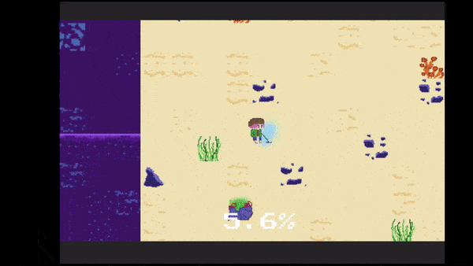

Dross
A top-down 2D game that combines pixel and hand-drawn art. Developed for the game jam, Sea Jam 2021, as part of
MrBeast's ocean cleanup activity, Dross follows the titular humanized hermit crab who acquires a metal detector and
uses it to try to find treasure while accidentally cleaning up the sea.
Goal
I wanted to create a simple gameplay loop with priorities toward the art and story. The pixel art was made in Aseprite and the character art was made in MediBang. The overall theme of the game is to promote beach cleanup, and that even with ulterior motives, one can make their environment a better place.Development
The game was designed and developed in Unity. I have worked with Unity for a long time now, making it easy to efficiently build a small 2D game. I constructed the game around the format of level-based scenarios, each level having its own story with dialogue and character interactions. I was inspired by the work of an indie developer called npckc who creates games with simple gameplay loops to then convey a meaningful story.Through this methodology, I designed a simple top-down 2D game revolving around a metal detector mechanic. I chose this mechanic because it also parallels the theme of ocean cleanup that was presented in the game jam. The main character uses his metal detector to pick up junk from the ocean and clean up the sea. And because I also wanted to include an anime dating sim, each level introduces a new fish-based girl the main character, Dross, talks with, highlighting not only their personality but also the central point of each level. The central point is the conflict or situation that arose from junk falling onto the ocean floor. By the end of the game, the player gets the treasure he sought out but eventually chooses to settle down with one of the main heroines, giving the player a choice between the characters.
The first step of development was to design the control scheme, which is a simple top-down 2D movement system. Then I implemented the metal detector system, which is basically a game manager that collects the positions of all the junk scattered throughout the level, and then the player controller will check each time through the list of junk positions the distance. The closer they get, the color on the metal detector changes accordingly. And lastly, for the dialogue system, I used a Unity plugin called "Inkle's Ink" which allows me to easily construct long chains of dialogue and tag the lines with information such as character and sprite.

The word 'Dross' means something regarded as worthless, rubbish. Since the main character is a lazy hermit crab who likes to collect things and the game is centered around ocean trash and cleanup, I think Dross was an appropriate name for the game and titular character.
Character Designs
Because I was setting this within the ocean, I designed the characters around various fish and sea creatures, each design having a distinct motif to help indicate what animal they were based on.- Dross - Hermit Crab
- Sai - Red Salmon
- Mancy - Blue Mackerel
- Tillie - Sea Turtle
- Angela - Angler Fish
- Sera - Starfish
- Gawr Gura - Shark

I tried to go for a variety of colors to help make each character stand out from each other. Gawr Gura was an extra addition I included as a bonus character since I like VTubers and she fit the theme of the game as well.
All the art for the characters was created in MediBang, my go-to drawing program. I also created 2-3 expressions for each character to display their emotions through the dialogue sections. They were exported as .PNG files so I could easily integrate them into the visual novel scenes.
Narrative Design
The story for Dross follows the titular hermit crab man, Dross, on his quest to find treasure amongst the sea floor polluted with trash from above. During the ideation stage, the core theme of the story had to be 'Ocean Cleanup' since that was the theme of the game jam. I also wanted to do a unique anime spin by making the world of Dross feature human-like sea people. This way, it allowed me to create character designs that fit my style.I made Dross a hermit crab because the animal is known for scavenging and exploring, but also technically is always home since it carries its house on its back. Through this lens, it gave enough narrative reason for Dross the hermit crab to go out with his metal detector to look for something he deems worthwhile. While his intentions didn't start off pure, he still manages to clean up the sea along the way as the junk in each level intefered with his treasure hunting, so he dispelled the trash and waste on the ocean floor. His actions is also apparent to how each character reacts to his character, surprised or grateful for his help.
Since this was also going to be a level-based game, I wanted each level to have its own story, featuring a new character. I wrote the screenplay for the game in a Microsoft Word document, detailing the world, lore, character descriptions, and how the story will be segmented through each level throughout the game.
A snippet of the game's screenplay can be found in this link: Dross Script.pdf
The next step would be to integrate this into Unity. The Inkle's Ink plugin was the perfect tool to insert the story, allowing me to tag the lines with the appropriate character name and sprite emotion. Then I wrote code in C# that gets the Ink file data and parses it so I can display the respective character's name, sprite, and dialogue.
Sample of the game's beginning dialogue in an Ink file, displayed in the Ink plugin window.

The next step would be ways to trigger the dialogue during gameplay. There were two ways I did it.
- Creating invisible collision triggers the player can collide into that trigger the dialogue cutscene
- Using events and signals to programmatically start cutscenes in code
The dialogue cutscenes were a collection of UI game objects that turn visible and invisible during gameplay. During the cutscene sections, the player's game controls were paused and the only way to progress forward was by pressing the space bar. I also made intro comic pages to establish the lore and setting of Dross. And because there are multiple romance options, there are multiple endings. There isn't any in-depth romance system, just an option selection at the end of the game, letting the player choose who they want to end the game with. The option to select other endings becomes available in the main menu as well, giving the players a way to view the other endings.